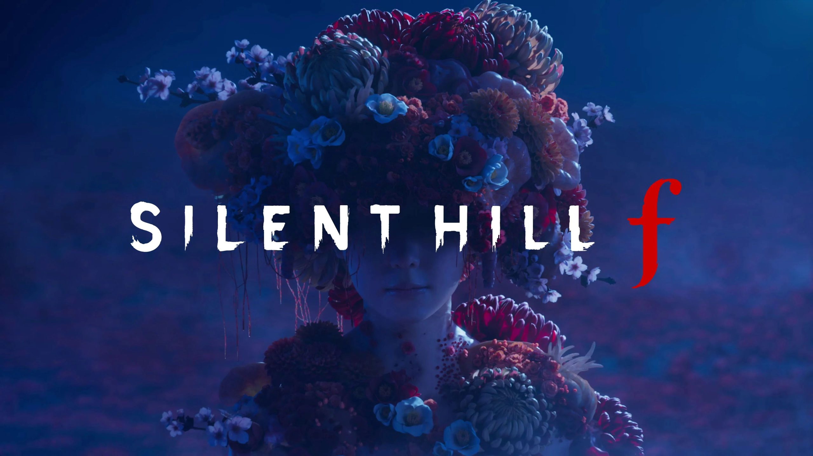

Notícias e Novidades do Xbox
Fique por dentro das últimas atualizações do ecossistema Xbox, incluindo novos títulos adicionados ao Game Pass e expansão da nuvem.
Konami planeja lançar anualmente novos jogos de Silent Hill

Após o sucesso de Silent Hill 2 Remake e Silent Hill f, a Konami planeja lançar jogos anualmente para a clássica franquia de horror e sobrevivência, que voltou aos holofotes com jogos muito elogiados por crítica e público após anos sem novos lançamentos. Em recente entrevista à revista japonesa Famitsu, o produtor-chefe da franquia Silent Hill, Motoi Okamoto, explicou que após o lançamento do próximo jogo da série, Silent Hill Townfall, previsto para chegar em 2026, a Konami planeja continuar lançando um título por ano, entre jogos inéditos e remakes.
"Incluindo títulos anunciados e não anunciados, queremos um ritmo de lançamentos de um título por ano. Não sei até que ponto vamos conseguir, mas continuarei dand o melhor melhor como produtor da série Silent Hill"
Embora não seja um compromisso firmado o lançamento de jogos anuais de Silent Hill, os planos de Okamoto deixam claro que a Konami voltou a tratar a série de terror e sobrevivência como um de seus pilares, após anos da empresa focada quase exclusivamente na série eFootball e em máquinas de Pachinko no Japão.